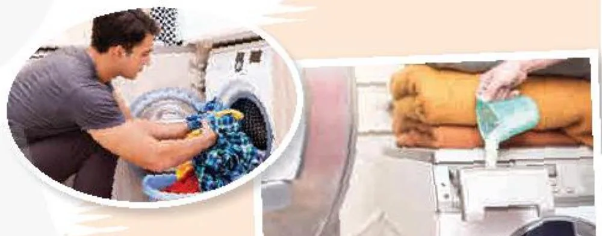
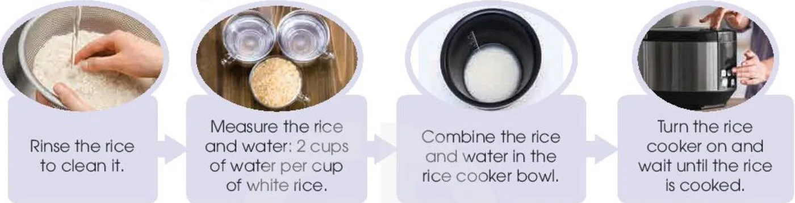

Learning basic life skills
Lesson 4 — Speaking
8Five stops in 45 minutes
- 🥚
Warm-up
How to boil eggs
5 min - 🧺
Model
Tasks 1–2 · doing laundry
10 min - 🍚
Pairs
Task 3 · cooking rice
10 min - 👥
Groups
Task 4 · the best recipe
17 min - ✅
Wrap-up
Exit ticket
3 min
Warm-up
How to boil eggs
5 minutesHow do you boil eggs?
No internet? Ask the class: What do we need? What do we do first, next, finally? Write the steps on the board.
What did you see?
1. What should we prepare? eggs · a pot · water · a stove · a bowl of cold water
2. What are the steps to boil eggs? put the eggs in a pot → cover them with water → boil → cook for about 10 minutes → put them in cold water → peel
Model
Doing laundry
10 minutesa. Have you ever done your laundry? If yes, how did you do it?

1. ___ → 2. D → 3. ___ → 4. ___ → 5. ___
A. Hang or fold, and store your own clothes
B. Sort the clothes by colour
C. Remove the wet clothes from the washing machine and dry them
D. Add the washing powder or liquid
E. Load the washing machine and turn it on
The correct order B → D → E → C → A
How to do laundry (1)
There are several simple steps in doing laundry. First of all, (1) sort / don’t sort sort your clothes by colour. You should separate them into whites and colours, and wash them separately. (2) Secondly / Finally Secondly, add the washing powder or liquid. Read the instructions on the packet to make sure you use the right amount.
How to do laundry (2)
Then, (3) load / you load load the washing machine and turn it on. Make sure you place the items one at a time. Don’t put too many items as they need room to move about in the water. When the washing machine stops, (4) remove / you will remove remove the wet clothes. You can hang the items to dry, or put them in the dryer. Remember that air-drying clothes saves energy and money. (5) Finally / Afterwards Finally, don’t forget to hang or fold each item. You could also iron your clothes before storing them in the wardrobe or drawer.
Giving instructions
- ❗
the imperative form of the verb
Don’t … / Avoid … / Make sure …
- 💡
modal verbs
You could … / You should … / You mustn’t …
- 🔢
linking words or phrases
First, / To begin with, / First of all, … Second, / Secondly, … Then, / After that, / In addition, … Last but not least, / Finally, …
Pairs
Cooking rice in a rice cooker
10 minutesCooking rice in a rice cooker

There are several steps…
There are several steps in cooking rice in a rice cooker. First of all, rinse the rice to remove any dirt. Secondly, measure the rice and the water. You should add two cups of water for every cup of regular rice. Then, combine the rice and the water in the non-stick bowl that comes with the rice cooker. Finally, turn on the rice cooker and wait for a few minutes until the rice is cooked.
Groups
The best recipe for cooking rice
17 minutesMake it even better!
➕ More steps: Before you start, … · After cooking, …
💡 Tips: You should … · Make sure … · Don’t … · You could also …
🗣️ Report: There are … steps in our recipe. First of all, … Last but not least, …
🏆 Vote: the clearest and most useful recipe
More steps
1. Use cold water to rinse the rice to remove dirt and starch. Rinse until the water runs clean.
2. Read the rice cooker instruction manual.
3. There are different types of rice, so adjust the rice to water ratio accordingly.
4. Let the rice sit in the cooker for 10 minutes after cooking to make it fluffy.
5. Do not leave the cooked rice in the rice cooker overnight. · Clean the bowl with a soft sponge.
Add more flavour
🍗 Use chicken broth or coconut juice instead of water to add flavour.
🧂 Put dried spices in the water before turning the cooker on.
🌿 Add fresh herbs to the rice before cooking.
Before you leave…
1. Name two linking words for giving instructions. First of all · Secondly · Then · After that · Finally
2. Give one tip with a modal verb. e.g. You should rinse the rice until the water runs clean.
3. Give four instructions for one life skill you know. Students’ own answers
Homework
1. Write instructions (5 steps) for a life skill you know, e.g. cleaning your bedroom.
2. Do the Speaking exercises in the workbook.
3. Prepare for Lesson 5 — Listening: becoming independent learners.